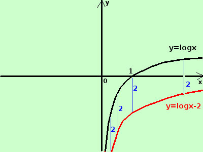

|
sviluppo y = logx - 2  e' la funzione logaritmo a base naturale (di base il numero di Nepero e) diminuita di 2, quindi il grafico della funzione y= logx va spostato verso il basso di 2 se faccio la differenza in verticale vale sempre 1 Importante: sommare una costante negativa ad una funzione equivale a spostare la funzione verso il basso di una quantita' pari alla costante |